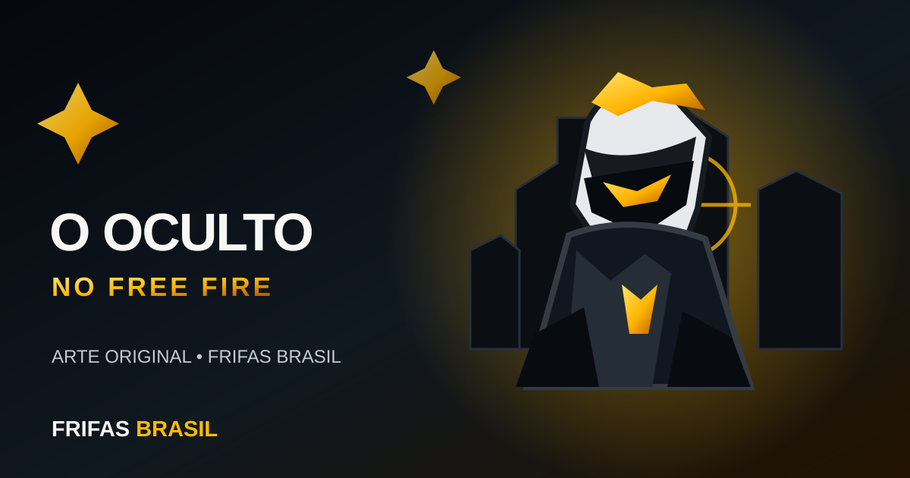
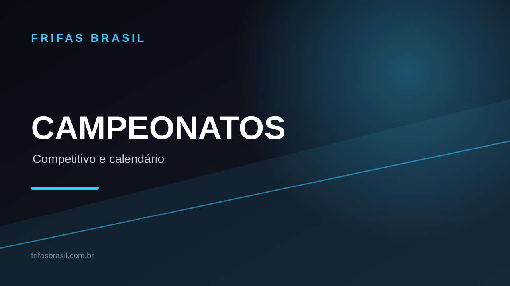

Notícias
Novidades, eventos, atualizações e acontecimentos do Free Fire organizados em um só lugar.
Mais recentes
Matérias ordenadas pela data de publicação. Datas de eventos aparecem separadamente.

O Oculto começou no Free Fire: veja o período e as novidades
Evento temático traz uma experiência alternativa no mapa, missões e recompensas. Confira o que foi anunciado e confirme a disponibilidade dentro do jogo.
Ler matéria →O Oculto se revela agora: missões e recompensas no Free Fire
Missões podem render Máscara Negra. Confira as tarefas reportadas, as datas e as fontes consultadas.
Ler matéria →
Bazar do Drop Sopro do Dino: itens e período reportado
Rotação reportada inclui USP-2 Sopro do Dino, Parede de Gel Nascido das Chamas e outros itens.
Ler matéria →Evento Missions: confira a missão dentro do jogo
A missão e a recompensa ainda precisam ser conferidas diretamente na interface do jogo.
Período informado: 13/10/2026 a 02/11/2026. Confira a disponibilidade no jogo.Ler matéria →Vira-Carta recebe Conjunto Dino Fogo
Seleção reportada para o Brasil reúne nove itens e usa Token Padrão.
Período informado: 10/10/2026 a 23/10/2026. Confira a disponibilidade no jogo.Ler matéria →
Fluxo W7M é campeão do FFWS Brasil 2026 Split 2
Equipe confirma o título no Champion Rush e garante vaga no Mundial de Bangkok.
Ler matéria →Parede de Gel: Monumento Hokage chega ao Bazar do Drop
Nova rotação reportada para o servidor brasileiro fica disponível de 7 a 15 de outubro.
Período informado: 07/10/2026 a 15/10/2026. Confira a disponibilidade no jogo.Ler matéria →Free Fire tem 5 recompensas de Codiguin em outubro
Lista divulgada via programa FFCP reúne cinco recompensas previstas para outubro.
Ler matéria →Loja de outubro recebe Conjunto Zephyr, Senhor dos Ventos
Rotação reportada para o Brasil começou em 1º de outubro e tem previsão até 30 de outubro.
Ler matéria →Bazar do Drop recebe Rasengan em nova rotação
A seleção reportada para o servidor brasileiro vai de 3 a 11 de outubro.
Período informado: 03/10/2026 a 11/10/2026. Confira a disponibilidade no jogo.Ler matéria →Vira-Carta com Conjunto Sasuke: edição de outubro
A rotação reportada vai até 15 de outubro, com Groza - Sasuke e Conjunto Bermuda Angelical.
Período informado: 25/09/2026 a 15/10/2026. Confira a disponibilidade no jogo.Ler matéria →Loja Prime de outubro traz Conjunto Cobra: Modo Fúria
Seleção reportada para outubro reúne seis itens; confira os nomes e os preços divulgados.
Ler matéria →OB55: MP40, UMP, Vector, M1887 e M590 mudam em 1º de outubro
A Garena marcou para 1º de outubro a entrada de uma nova rodada de ajustes no meta de armas da OB55, com foco em mobilidade, alcance, precisão e dano.
Ler matéria →M7, Skorp, RPK e Harpia: novidades da OB55
A Garena confirmou as quatro armas para 1º de outubro; veja imagens oficiais, características, preços e onde encontrá-las.
Ler matéria →Airdrops viram meteoros e Máquinas de Vendas ganham descontos
A etapa de 1º de outubro adiciona dois eventos aleatórios e ajustes nos airdrops do Battle Royale.
Ler matéria →Misha perde efeito no cavalo; montaria volta a 500 HP
Mudança reportada para 1º de outubro altera a interação da habilidade da Misha com a montaria.
Ler matéria →Bazar do Drop com Nove-Caudas: edição de setembro
A rotação brasileira começou em 30 de setembro e tem término reportado para 13 de outubro.
Período informado: 30/09/2026 a 13/10/2026. Confira a disponibilidade no jogo.Ler matéria →Free Fire: relembre o evento oficial de 9º aniversário de 2026
A Garena celebrou o 9º aniversário com um evento temático anunciado em junho de 2026; relembre as novidades oficiais.
Ler matéria →OB55 muda Kenta, Morse, Luna e Wukong: veja os ajustes de personagens
A atualização reformula completamente a habilidade do Kenta, reduz parte da força de Morse e Luna e diminui o tempo de recarga do Wukong.
Ler matéria →Invasão da Nove-Caudas está de volta ao Free Fire
O retorno traz Hinata Hyuga, Academia Ninja, novas mecânicas no Battle Royale e recompensas.
Período informado: 16/09/2026 a 15/10/2026. Confira a disponibilidade no jogo.Ler matéria →OB55 em outubro: novas armas, eventos e balanceamento
A etapa marcada para 1º de outubro reúne a estreia de M7, Skorp, RPK e Harpia, novos eventos aleatórios e uma rodada ampla de ajustes de armas.
Ler matéria →Eventos e previsões
As datas abaixo indicam o período previsto do conteúdo, não a data de publicação.
Trilha Turbo com Rock Lee e itens de NARUTO
Rotação temática foi identificada em dados do jogo e é tratada como informação reportada.
Período informado: 02/10/2026 a 15/10/2026. Confira a disponibilidade no jogo.Ler matéria →Virada Suprema recebe Punho - Raio do Ninjutsu
Rotação reportada para o servidor brasileiro começa em 2 de outubro; a matéria diferencia o que foi reportado do que foi anunciado oficialmente.
Período informado: 02/10/2026 a 15/10/2026. Confira a disponibilidade no jogo.Ler matéria →Passe Booyah: Guardiões do Oeste
Temporada de outubro traz o tema do Velho Oeste e progressão Premium.
Período informado: 01/10/2026 a 31/10/2026. Confira a disponibilidade no jogo.Ler matéria →Free Fire: verificação de idade e controle parental — situação atual
A verificação de idade começou a aparecer em contas; a disponibilidade geral das funções parentais exige confirmação.
Ler matéria →FFWS Global Finals 2026 começa em Bangkok
A Garena confirmou 24 equipes e quatro fins de semana de competição.
Ler matéria →Passe Booyah: Poder do Escorpião
A temporada de novembro é reportada com esse tema.
Ler matéria →Servidor Avançado OB56 é esperado para novembro
A janela ainda é previsão; a Garena não confirmou uma data oficial.
Ler matéria →Nenhuma notícia encontrada. Tente outro termo ou limpe os filtros.